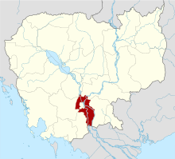
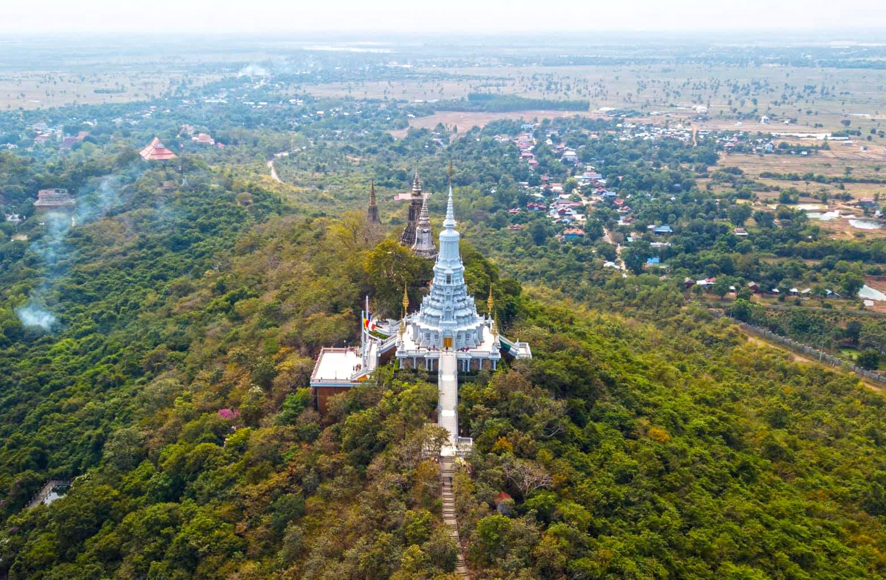
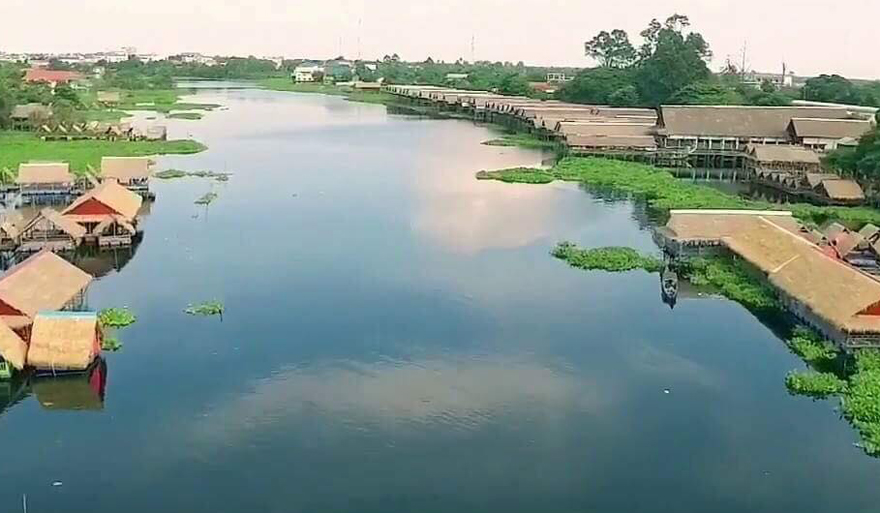

Go Home
ខេត្ត កណ្ដាល

ទីតាំងនៃខេត្តកណ្តាល
កណ្ដាល(ការបញ្ចេញសំឡេងខ្មែរ: [kann'da:l], អានថា: កន់'ដាល) គឺជាខេត្តនៃប្រទេសកម្ពុជាដែលមានទីតាំងនៅប៉ែកអាគ្នេយ៍នៃប្រទេសនេះ។
ខេត្តកណ្តាល បានបង្ហាញថា មានសក្ដានុពលជាច្រើនដូចជា វិស័យកសិកម្ម ឧស្សាហកម្ម និង ទេសចរណ៍ ជាដែលវិស័យគោលចម្បងក្នុងការអភិវឌ្ឍសេដ្ឋកិច្ចខេត្តទទួលបានការរីកចម្រើន។
រីឯសម្រាប់ប្រព័ន្ធ ហេដ្ឋារចនាសម្ព័ន្ធនៅខេត្តកណ្ដាលគឺជា ខេត្តមានផ្លូវជាតិធំសំខាន់ៗជាច្រើន សម្រាប់តភ្ជាប់ទៅកាន់បណ្ដាខេត្តនានា។ ខេត្តកណ្ដាល ក៏មានស្ពានធំៗឆ្លងទន្លេផងដែរ នឹងមាន
ព្រលានយន្តហោះកម្រិតអន្តរជាតិមួយ១កន្លែងផងដែរ។ កសិកម្ម និងការនេសាទ គឺជាឧស្សាហកម្មសំខាន់ពីរនៃខេត្តនេះផងដែរ។ ខេត្តមានព្រំដែន
• ខាងកើតជាប់ខេត្តព្រៃវែង
• ខាងត្បូងជាប់ ខេត្តតាកែវ
• ខាងកើតឈៀងខាងជើងជាប់ ខេត្តកំពង់ចាម
• ខាងកើតឈៀងខាងត្បូងជាប់នឹង វៀតណាម។
ទីរួមខេត្ត គឺក្រុងតាខ្មៅ ដែលមានចំងាយ ១១ គម ខាងត្បូងនៃ[ភ្នំពេញ]។ កណ្ដាលគឺជាខេត្តមួយក្នុងចំណោម
ខេត្តដែលស្ដុកស្ដម្ភជាងគេក្នុងប្រទេស។ ខេត្តកណា្តលមានស្រុកចំនួន១១ ក្រុង១ ឃុំ១៤៧ ភូមិចំនួន១០៨៧ និង១៤៧សង្កាត់ មានប្រជាជនចំនួន ១០៧៥១២៥នាក់ ហើយខេត្តនេះផងដែរមានផែ្ទដី
៣៥៦៨គីឡូម៉ែតការេ។ ហើយខេត្តនេះផងដែរមានផែ្ទដី ៣៥៦៨ សហាតិមាត្រការ៉េ។ ប្រជាជនខេត្តកណា្តលភាគច្រើនប្រកបរបរកសិកម្ម ដាំដំណាំ ក្រៅពីនេះរដូវធើ្វស្រែ ពួកគាត់មានរបរមួយទៀតគឺ
របរឡើងត្នោត និងធើ្វស្រូវប្រាំង ព្រមទាំងដាំដំណាំផ្សេងៗទៀត ដើម្បីផ្គត់ផ្គង់ជីវភាពគ្រួសាររបស់ខ្លួន។
ភូមិសាស្ត្រ
ខេត្តកណ្ដាលព័ទ្ធជុំវិញរាជធានីភ្នំពេញទាំងមូល។ ខេត្តនេះក៏ជាប៉ែកមួយនៃផ្ទៃទីក្រុងមេភ្នំពេញធំជាងគេដែលមានប្រជាជនមួយលាននាក់រស់នៅក្នុង និង ព័ទ្ធជុំវិញខេត្ត។
កាលណាយើងធ្វើដំណើរចេញពីភ្នំពេញ ព្រំដែនរវាងខេត្ត-រាជធានីទាំងពីរស្ទើរតែមើលមិនដឹង។
ខេត្តនេះប្រកបដោយផ្ទៃដីសើមទំនាបមានលក្ខណៈធម្មតា ដែលគ្របដណ្ដប់ដោយវាលស្រែ និង ដីដាំដំណាំកសិកម្មដទៃទៀត។ រយៈកំពស់មធ្យមរបស់ខេត្តមិនលើសពី
១០ មាត្រ លើកំរិតទឹកសមុទ្រឡើយ។ ខេត្តក៏មានលក្ខណៈពិសេសដោយសារទន្លេធំបំផុតពីរនៅក្នុងប្រទេសនេះហូរកាត់ ទន្លេទាំងពីរនោះគឺ ទន្លេបាសាក់ និង មេគង្គ។
ប្រវត្តិ
ខេត្តកណ្តាលជាឈ្មោះខេត្តមួយក្នុងរចនាសម្ព័ន្ធគ្រប់គ្រងរដ្ឋបាលនៃប្រទេសកម្ពុជា ពាក្យនេះពុំដឹងជាមានប្រវត្តិនិងប្រភពដើមយ៉ាងណាទេតែតាមការស្រាវជ្រាវបានឱ្យដឹង
ថាក្នុងផែនដីព្រះបាទនរោត្តម (១៨៦០-១៩០៤) និងផែនដីព្រះបាទស៊ីសុវត្ថិ (១៩០៤-១៩២៧) ព្រះរាជាណាចក្រកម្ពុជាចែកចេញជាច្រើនខេត្តក្នុងនោះពុំមានឈ្មោះខេត្តកណ្តាលទេ កាលនោះឈ្មោះខេត្ត
មួយចំនួនជាឈ្មោះស្រុកសព្វថ្ងៃដូចជា ស្រុកល្វាឯម ស្រុកស្អាង ស្រុកកោះធំ ស្រុកកណ្តាលស្ទឹង ជាដើម (ឯកសារមហាបុរសខ្មែរ)។ បើតាមកំណត់ត្រាចារឹកនៅចេតិយអង្គឌួងនិងចេតិយបុរាណជាច្រើនទៀត
លើភ្នំព្រះរាជទ្រព្យ ស្រុកពញាឮ យើងយល់ថាក្នុងរាជព្រះបាទនរោត្តម ស៊ីសុវត្ថិ ភ្នំព្រះរាជទ្រព្យនេះស្ថិតក្នុង ស្រុកសំរោងទង (ឈ្មោះស្រុកមួយរបស់ខេត្តកំពង់ស្ពឺសព្វថ្ងៃ) តែក្រោយមកក្នុងរាជ្យព្រះបាទស៊ីសុវត្ថិ-មុនីវង្ស
(១៩២៧-១៩៤១) មានការរៀបចំព្រំប្រទល់ខេត្តជាថ្មីទើបបានជាភ្នំព្រះរាជទ្រព្យត្រូវស្ថិតនៅក្នុងខេត្តកណ្តាលវិញ (កំណត់ត្រាចារឹកចេតិយព្រះស៊ីសុវត្ថិ) ដូចនេះ យើងអាចសន្និដ្ឋានបានថាខេត្តកណ្តាលកើតមាន
ក្នុងរចនាសម្ព័ន្ធរដ្ឋបាលចាប់តាំងពីរាជ្យព្រះបាទស៊ីសុវត្ថិ-មុនីវង្ស សម័យដែលអាណានិគមបារាំងគ្រប់គ្រង។
បំណែងចែករដ្ឋបាល
ខេត្តកណ្តាលជាខេត្តមួយក្នុងចំណោមខេត្ត- រាជធានីទាំង ២៥ នៃព្រះរាជាណាចក្រកម្ពុជា ដែលលាតសន្ធឹងហ៊ុំព័ទ្ធរាជធានីភ្នំពេញ តាមបណ្តោយដងទនេ្លមេគង្គ ទនេ្លសាប
ទន្លេបាសាក់ និងមានព្រំប្រទល់ :
ខេត្តកណ្ដាលចែកចេញជា ១១ ស្រុក-ក្រុង, ១១៧ឃុំ, ១០សង្កាត់ និង ១,០១០ ភូមិ
| ក្រមស្រុក-ក្រុង |
ស្រុក-ក្រុង |
ជាឡាតាំង |
ចំនួនឃុំ-សង្កាត់ |
ចំនួនភូមិ |
| ០៨០១ |
កណ្ដាលស្ទឹង |
Kandal Stueng |
១៨ |
១២៧ |
| ០៨០២ |
កៀនស្វាយ |
Kien Svay |
៨ |
៦៧ |
| ០៨០៣ |
ខ្សាច់កណ្តាល |
Khsach Kandal |
១៨ |
៩៣ |
| ០៨០៤ |
កោះធំ |
Kaoh Thum |
១១ |
១១៣ |
| ០៨០៥ |
លើកដែក |
Leuk Daek |
៧ |
២៥ |
| ០៨០៦ |
ល្វាឯម |
Lvea Aem |
១៥ |
៤៣ |
| ០៨០៧ |
មុខកំពូល |
Mukh Kampul |
៧ |
៣៩ |
| ០៨០៨ |
អង្គស្នួល |
Angk Snuol |
១០ |
២០០ |
| ០៨០៩ |
ពញាឮ |
Ponhea Lueu |
១១ |
១២៤ |
| ០៨១០ |
ស្អាង |
S'ang |
១២ |
១២០ |
| ០៨១១ |
តាខ្មៅ |
Ta Khmau |
១០ |
៥៩ |
| សរុប |
១២៧ |
១,០១០ |
តំបន់ទេសចរណ៍
១-ភ្នំព្រះរាជទ្រព្យ ឬ ភ្នំឧត្តុង្គ
ភ្នំឧត្តុង្គមានរូបរាងដូចជាសត្វនាគ លាតសន្ធឹងពីជើងទៅត្បូងប្រវែងប្រមាណ ១,៥០០ម៉ែត្រ និង ទទឹង ៧០០ម៉ែត្រ មានទេសភាពធម្មជាតិខៀវខ្ចីស្រស់ស្អាតព័ទ្ធជុំវិញភ្នំ
និងស្រឡះល្អពោរពេញដោយខ្យល់អាកាសបរិសុទ្ធ ដោយអាចទាក់ទាញភ្ញៀវទេសចរណ៍ចង់ទៅលំហែកាយ។

២-រមណីយដ្ឋានធម្មជាតិ កៀនស្វាយក្រៅ
រមណីយដ្ឋានធម្មជាតិនេះនេះមានផ្ទៃដីប្រមាណជាង ១០ហិកតា មានធម្មជាតិធំតូចនៅអមមាត់ទឹកត្រជាក់ល្ហឹម មានដំណាំចម្ការ និងដំណាំហូបផ្លែនៅក្បែរនោះថែមទៀតផង។
ភ្ញៀវទេសចរច្រើនសម្រាកលំហែអារម្មណ៍នឹងធម្មជាតិ ជិះទូកកម្សាន្ដលេង ញ៉ាំចំណីលក់តាមទូក និងផ្ដិតយកទេសភាពលើមាត់ទឹកនៅកន្លែងនេះ។
